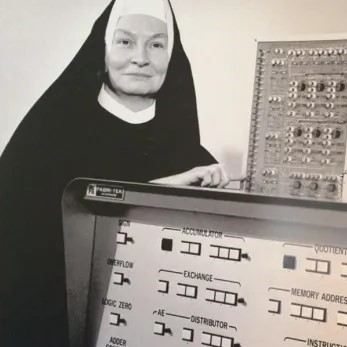

Ir. Mary Kenneth Keller
freira e cientista da computação
Mulher, Freira e Cientista. Estadunidense, de Ohio, viveu entre os anos de 1913 e 1985. Umas das primeiras doutoras de seu país, com a tese intitulada: Inferência indutiva em padrões gerados por computador (Inductive Inference on Computer Generated Patterns).
Principais Contribuições
Participação: Desenvolvimento da Linguagem de Programação BASIC
BASIC é um acrônimo para Beginner's All-purpose Symbolic Instruction Code; em português: Código de Instruções Simbólicas de Uso Geral para Principiantes.
Sua contribuição permitiu que qualquer pessoa pudesse aprender a linguagem, se tornando mais acessível para a população.
Fundação: Departamento de Diências da Domputação na Universidade de Clarke em Iowa
Passou 20 anos de sua vida dedicando-se e apaixonando-se pelo potencial do que os computadores poderiam se tornar e visou aumentar o acesso e a informação, promovendo a educação.
Existe também uma bolsa de estudos em Ciência da Computação em seu nome na mesma instituição.
Inclusão: Mulher e Educação
Irmã Keller defendeu a inclusão e o envolvimento de mulheres na ciência da computação, e contribuiu para a fundação da Association of Small Computer Users in Education (ASCUE).
Acreditava que com a computação seria possível simular, mecanicamente, o processo cognitivo e assim investir em áreas como inteligência artificial. Na importância do ensino com o auxílio da tecnologia e em como a computação poderia ajudar os seres humanos a aprender.
REFERÊNCIA:
Mary Kenneth Keller - Wikipedia